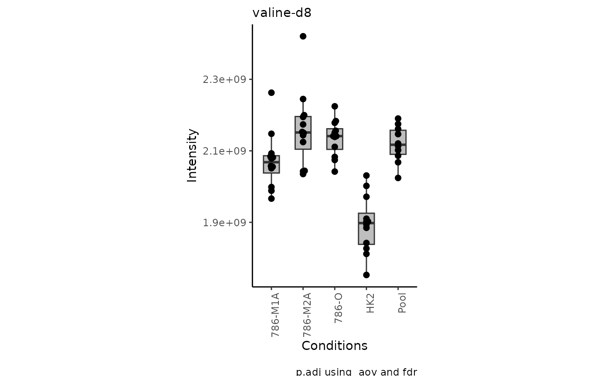
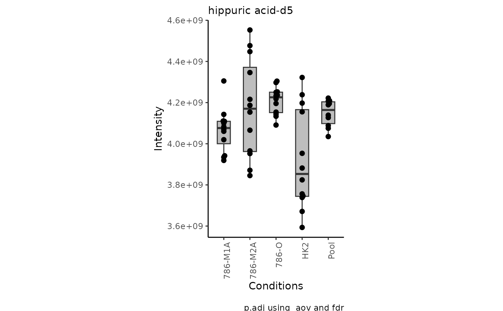
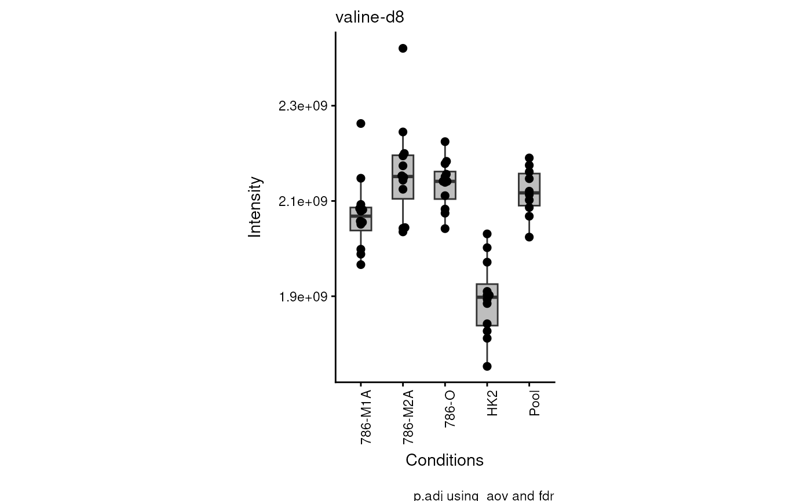
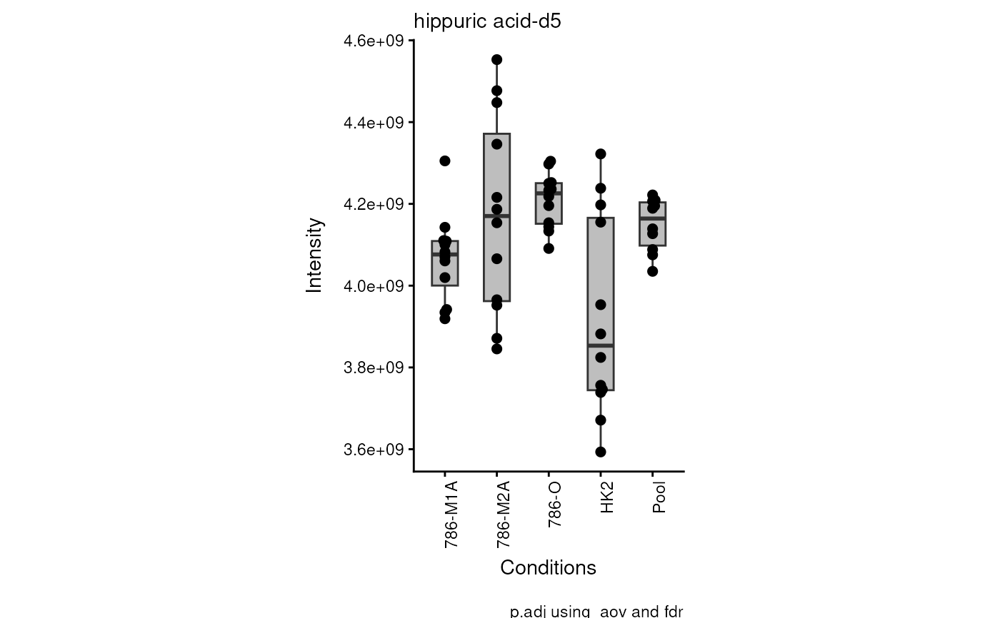

This script allows you to perform different visualizations (bar, box, violin plots) using the results of the MetaProViz analysis
Source:R/VizSuperplots.R
viz_superplot.RdBar, Box or Violin plot in Superplot style visualization
Usage
viz_superplot(
data,
metadata_sample = NULL,
metadata_info = c(Conditions = "Conditions", Superplot = NULL),
plot_type = "Box",
plot_name = "",
plot_conditions = NULL,
stat_comparison = NULL,
pval = NULL,
padj = NULL,
xlab = NULL,
ylab = NULL,
theme = NULL,
color_palette = NULL,
color_palette_dot = NULL,
save_plot = "svg",
print_plot = TRUE,
path = NULL
)Arguments
- data
SummarizedExperiment (se) file including assay and colData. If se file is provided, metadata_sample is extracted from the colData of the se object. metadata_feature, if available, are extracted from the rowData. Alternatively provide a DF with unique sample identifiers as row names and metabolite numerical values in columns with metabolite identifiers as column names. Use NA for metabolites that were not detected.
- metadata_sample
Optional: Only required if you did not provide se file in parameter data. Provide DF which contains metadata information about the samples, which will be combined with your input data based on the unique sample identifiers used as rownames. Default = NULL
- metadata_info
Named vector including at least information on the conditions column: c(Conditions="ColumnName_metadata_sample"). Additionally Superplots can be made by adding Superplot ="ColumnName_metadata_sample", which are usually biological replicates or patient IDs. Default = c(Conditions="Conditions", Superplot = NULL)
- plot_type
String with the information of the Graph style. Available options are Bar. Box and Violin Default = Box
- plot_name
Optional: String which is added to the output files of the plot.
- plot_conditions
Vector with names of selected Conditions for the plot. Can also be used to order the Conditions in the way they should be displayed on the x-axis of the plot. Default = NULL
- stat_comparison
List of numeric vectors containing Condition pairs to compare based on the order of the plot_conditions vector. Default = NULL
- pval
Optional: String which contains an abbreviation of the selected test to calculate p.value. For one-vs-one comparisons choose t.test or wilcox.test , for one-vs-all or all-vs-all comparison choose aov (=anova) or kruskal.test Default = NULL
- padj
Optional: String which contains an abbreviation of the selected p.adjusted test for p.value correction for multiple Hypothesis testing. Search: ?p.adjust for more methods:"BH", "fdr", "bonferroni", "holm", etc.Default = NULL
- xlab
Optional: String to replace x-axis label in plot. Default = NULL
- ylab
Optional: String to replace y-axis label in plot. Default = NULL
- theme
Optional: Selection of theme for plot, e.g. theme_grey(). You can check for complete themes here: https://ggplot2.tidyverse.org/reference/ggtheme.html. Default = NULL
- color_palette
Optional: Provide customized color_palette in vector format. Default = NULL
- color_palette_dot
Optional: Provide customized color_palette in vector format. Default = NULL
- save_plot
Optional: Select the file type of output plots. Options are svg, pdf, png or NULL. Default = svg
- print_plot
Optional: TRUE or FALSE, if TRUE plots are saved as an overview of the results. Default = TRUE
- path
Optional: Path to the folder the results should be saved at. Default = NULL
Examples
data(intracell_raw_se)
# only plot the first 2 metabolites
Res <- viz_superplot(data = intracell_raw_se[1:2, , drop = FALSE])
#> Warning: no non-missing arguments to max; returning -Inf
#> Warning: no non-missing arguments to max; returning -Inf
#> Warning: no non-missing arguments to max; returning -Inf
#> Warning: no non-missing arguments to max; returning -Inf
#> Warning: no non-missing arguments to max; returning -Inf
#> Warning: Removed 10 rows containing non-finite outside the scale range
#> (`stat_bracket()`).

#> Warning: no non-missing arguments to max; returning -Inf
#> Warning: no non-missing arguments to max; returning -Inf
#> Warning: no non-missing arguments to max; returning -Inf
#> Warning: no non-missing arguments to max; returning -Inf
#> Warning: no non-missing arguments to max; returning -Inf
#> Warning: Removed 10 rows containing non-finite outside the scale range
#> (`stat_bracket()`).

data(intracell_raw)
Intra <- intracell_raw[, c(1:6)] %>% tibble::column_to_rownames("Code")
Res <- viz_superplot(
data = Intra[, -c(1:3)],
metadata_sample = Intra[, c(1:3)]
)
#> Warning: no non-missing arguments to max; returning -Inf
#> Warning: no non-missing arguments to max; returning -Inf
#> Warning: no non-missing arguments to max; returning -Inf
#> Warning: no non-missing arguments to max; returning -Inf
#> Warning: no non-missing arguments to max; returning -Inf
#> Warning: Removed 10 rows containing non-finite outside the scale range
#> (`stat_bracket()`).

#> Warning: no non-missing arguments to max; returning -Inf
#> Warning: no non-missing arguments to max; returning -Inf
#> Warning: no non-missing arguments to max; returning -Inf
#> Warning: no non-missing arguments to max; returning -Inf
#> Warning: no non-missing arguments to max; returning -Inf
#> Warning: Removed 10 rows containing non-finite outside the scale range
#> (`stat_bracket()`).
